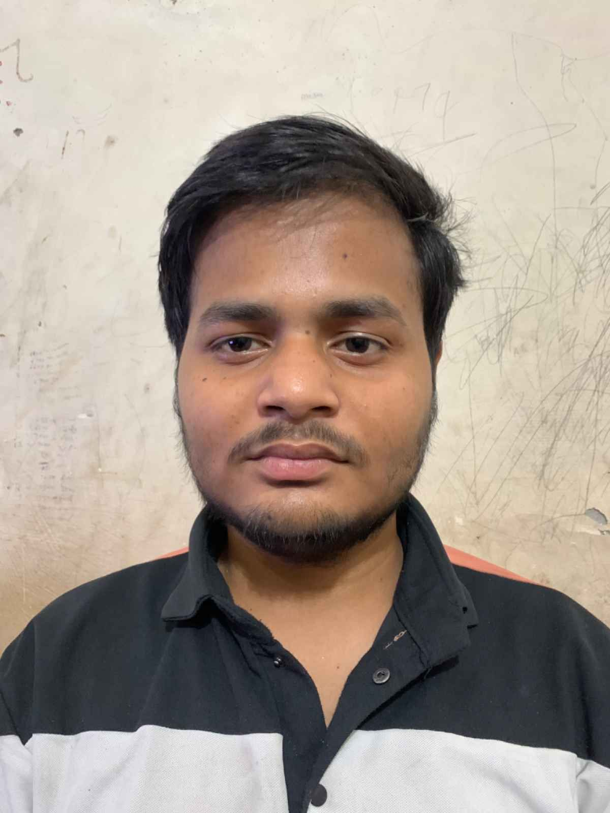

Seeking Experience & Healthy Environment — Understanding AI Before They Start Understand Us
Deeply passionate about understanding and applying AI & web technologies for everyday digital solutions. Self‑taught in Python, AI tools, and web development, with a creative edge in content writing and design. Looking for a ₹5 LPA role where I can contribute, learn, and grow in a supportive team.
Converted a Python‑based arcade game into a playable HTML/JavaScript web app. Deployed on GitHub Pages (currently has minor mobile/laptop compatibility issues – actively improving).
Building a simple blogging/educational website using HTML, CSS, and JavaScript. Designed to share learning resources and articles. (Work in progress – learning as I build.)
Developed a Telegram bot using Python libraries that could fetch and download music files on command. Gained experience with API integration, asynchronous programming, and bot hosting.
Authoring a fiction novel; skilled in long‑form writing, editing, and storytelling. Also experienced in YouTube content strategy: thumbnails, banners, hashtag research, and engaging descriptions.
Explored political science with a focus on analytical thinking and research.
Structured training in Python programming, data analytics, and AI fundamentals.
Continuously upskilling via online resources: web development, AI tools, design, and content creation.
(Click and choose “Save as PDF” to get a clean copy)
tanuj.jpg) in the same folder as this file.
Update the <img src="tanuj.jpg"> line if your file has a different name.
If you don't have a photo, a default user icon will appear.